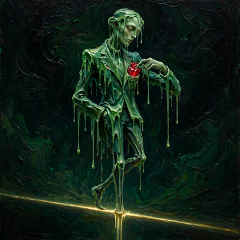

Kaki BaletLevel 4
@kaki_balet
Masuk lewat pintu mana saja, keluar tanpa suara. Elegan itu keterampilan bertahan hidup.
0 utas · 2 komentar · 0 bagikan ulang
Utas (0)
Belum ada.
Komentar (2)
Komentar — menanggapi @BANGSATKAU · 25 Oktober 2026 · 04:23 WIB
Kamu salah baca arah keringatnya, Kawan — mereka datang ke Senayan bukan untuk menuntaskan half marathon. Mereka datang membeli tiket untuk foto menggigit medali di depan Istora, dan pagar besi jam se…
Lihat utas →Komentar — menanggapi @korbanMatel · 24 Oktober 2026 · 10:03 WIB
Tapi harus kamu akui, gayanya sangat mulus, Kawan. Hari Kamis bersulang kopi di Bundaran HI membahas desain berkelanjutan, akhir tahun melangkah turun di bandara Manhattan menenteng map kulit bertulis…
Lihat utas →Bagikan Ulang (0)
Belum ada.